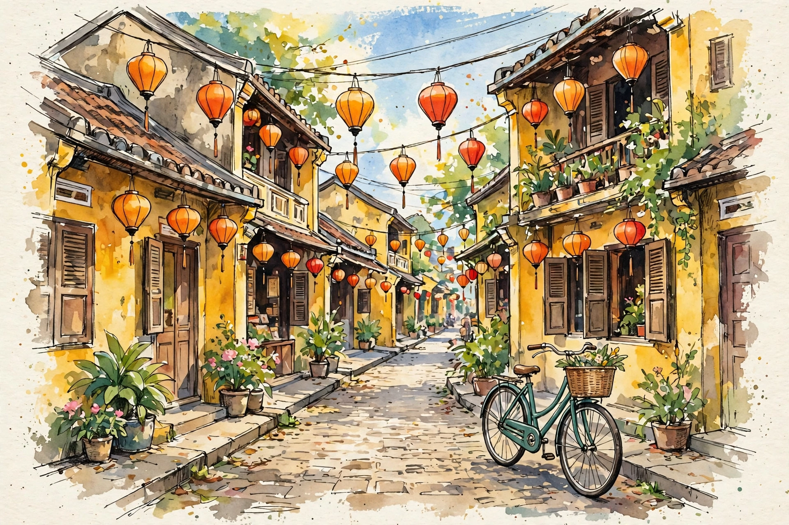

Phố vàng, đèn cam và một chiếc xe đạp cũ
Du ký · buổi sáng ở phố cổ
Sáng đó mình dậy sớm hơn thường lệ, xỏ đôi giày vải và đi bộ vào khu phố cũ khi đèn lồng còn chưa tắt — và con phố đã giữ chân mình lại lâu hơn dự định rất nhiều.

Sáng đó mình dậy sớm hơn thường lệ, xỏ đôi giày vải và đi bộ vào khu phố cũ khi đèn lồng còn chưa tắt. Tường nhà vàng như màu nắng để lâu ngày, và cả con phố im ắng đến mức nghe rõ tiếng chổi của cô lao công ở đầu ngõ.
Đèn lồng treo thành từng dây dài, quả cam, quả đỏ, đung đưa rất khẽ. Buổi tối chắc chúng rực rỡ lắm, nhưng mình lại thích chúng vào lúc này hơn: khi ánh sáng đã nhạt đi, chỉ còn lại màu cam ấm nằm yên trên nền tường vàng, như một vệt màu nước chưa kịp khô.
Chiếc xe đạp ở góc đường
Một chiếc xe đạp cũ dựng ở góc đường, giỏ xe cắm mấy bông hoa nhỏ. Mình đứng nhìn nó lâu đến mức cô bán cà phê ở cửa sổ bên cạnh phải hỏi: “Cháu tìm nhà ai à?” — “Dạ không, cháu tìm… một góc để nhớ.”
Có những buổi sáng không có gì đặc biệt xảy ra cả, vậy mà nhớ mãi — chỉ vì nắng đẹp và lòng mình vừa đủ chậm.
Đi hết con phố, mình ghé vào quán nhỏ ở cuối đường, gọi một ly cà phê và ngồi nhìn người ta mở cửa hàng: kéo cánh cửa gỗ, quét bậc thềm, treo lại dây đèn. Phố cổ thức dậy chậm rãi như thế, không vội vàng, không ồn ào.
Về đến nhà, mình vẫn còn nghe tiếng buổi sáng hôm đó trong đầu. Có lẽ vậy là đủ cho một ngày rồi: một con phố vàng, vài quả đèn cam, và một chiếc xe đạp cũ đứng đợi nắng lên.
Sơ đồ buổi sáng hôm đó
Ra khỏi nhà
6:45
Phố đèn lồng
7:00
Góc xe đạp cũ
7:20
Quán cà phê cuối phố
7:40
người viết
Mùa Cam